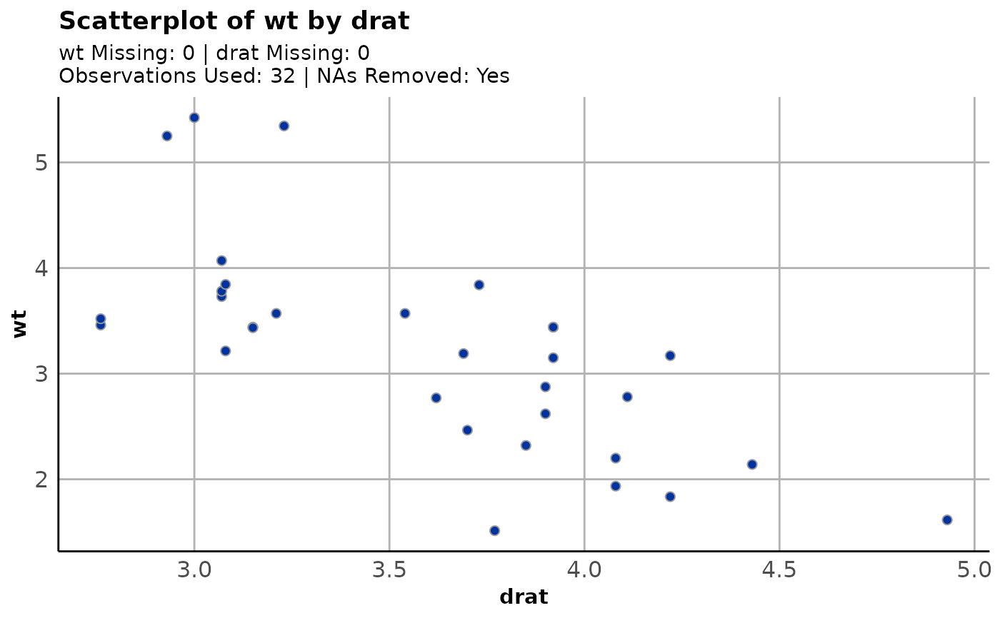
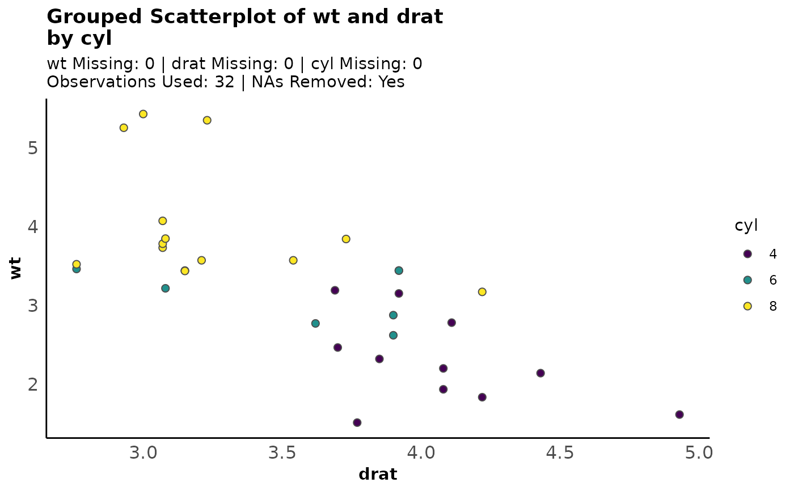

plot_scatter() creates a pre-themed scatterplot on two variables, optionally grouped by a
third categorical variable.
Usage
plot_scatter(
data,
formula,
fill = "#0032a0",
title = NULL,
legend_title = "Legend",
axis_lines = c("none", "both"),
ls_line = FALSE,
...
)Arguments
- data
A data frame.
- formula
Variables to build the plot on. Should be entered in formula notation,
var1~var2.- fill
The fill of the plot. Valid options are a character color (for standard scatterplots) or a variable given in formula notation (
~var), used to create a grouped scatterplot.- title
An override for the title of the plot. A sensible default is provided.
- legend_title
The title of the lengend. Ignored in non-grouped plots. Default is "Legend".
- axis_lines
Should major axis lines appear on the plot? Valid options are "none" or "both. Defaults to "none".
- ls_line
Should a least squares line (or lines) appear on the plot? Defaults to FALSE.
- ...
Extra title arguments passed on to
ggformula::gf_labs()(which feeds toggplot2::ggplot()).
Examples
plot_scatter(mtcars, wt~drat)
#> NAs always removed (in pairs) for scatterplots.
plot_scatter(mtcars, wt~drat, fill = "red")
#> NAs always removed (in pairs) for scatterplots.
plot_scatter(mtcars, wt~drat, axis_lines = "both")
#> NAs always removed (in pairs) for scatterplots.

plot_scatter(mtcars, wt~drat, fill = ~cyl)
#> NAs always removed (in pairs) for scatterplots.
plot_scatter(mtcars, wt~drat, fill = ~cyl, legend_title = "Cyl")
#> NAs always removed (in pairs) for scatterplots.
